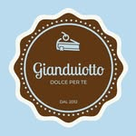
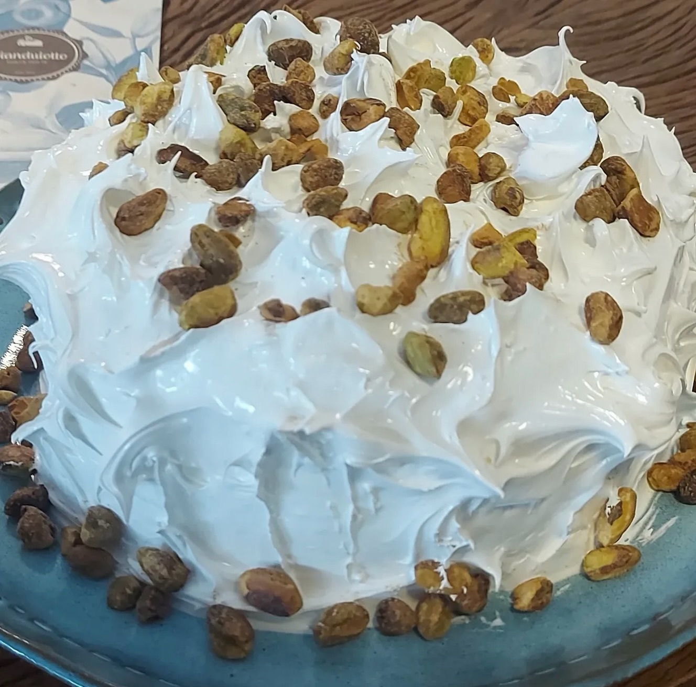
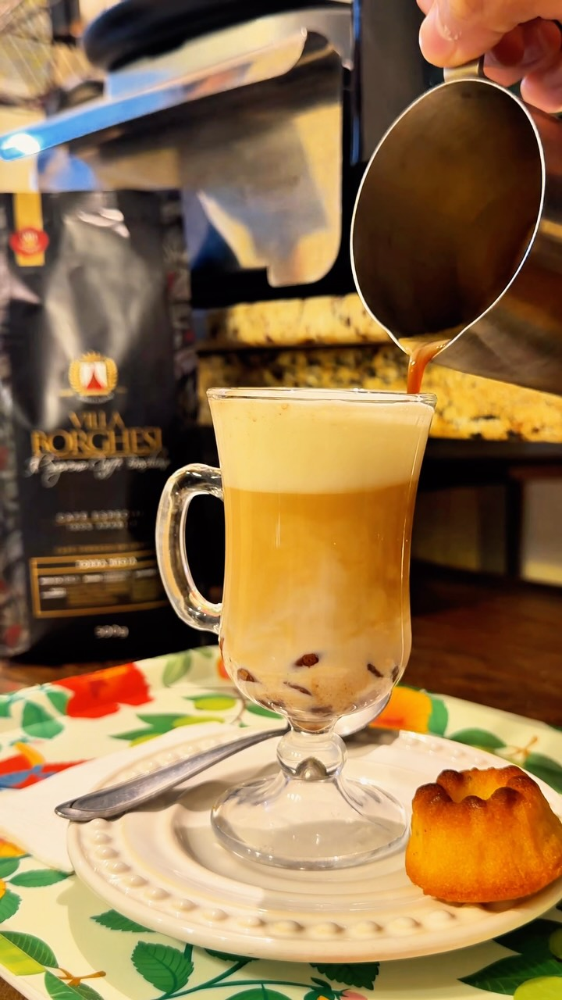
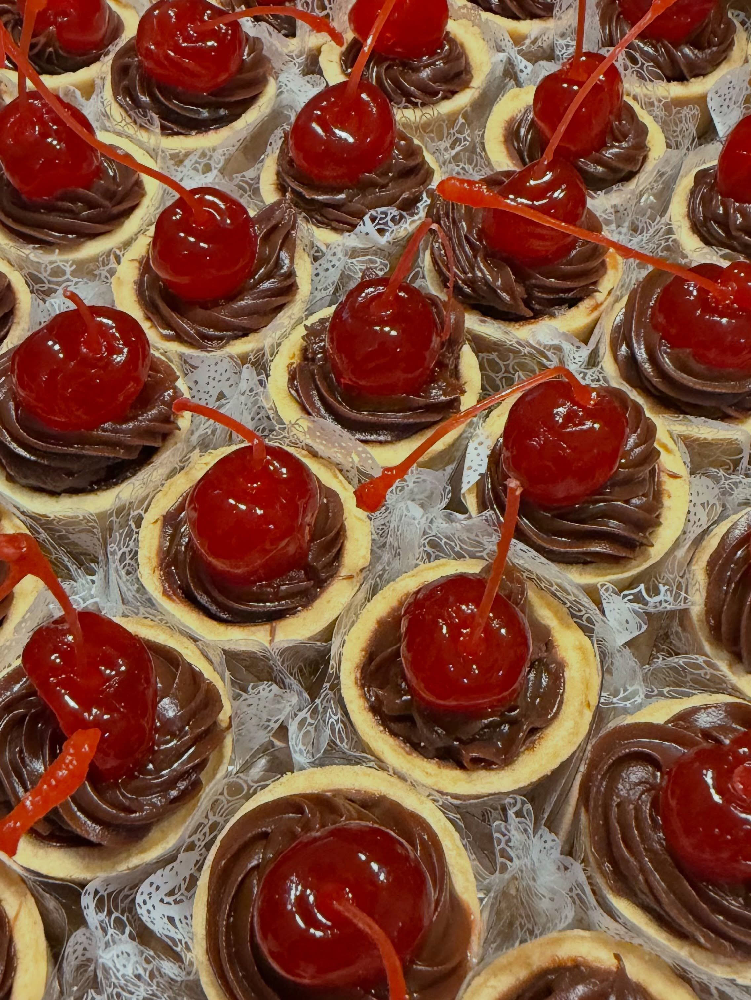
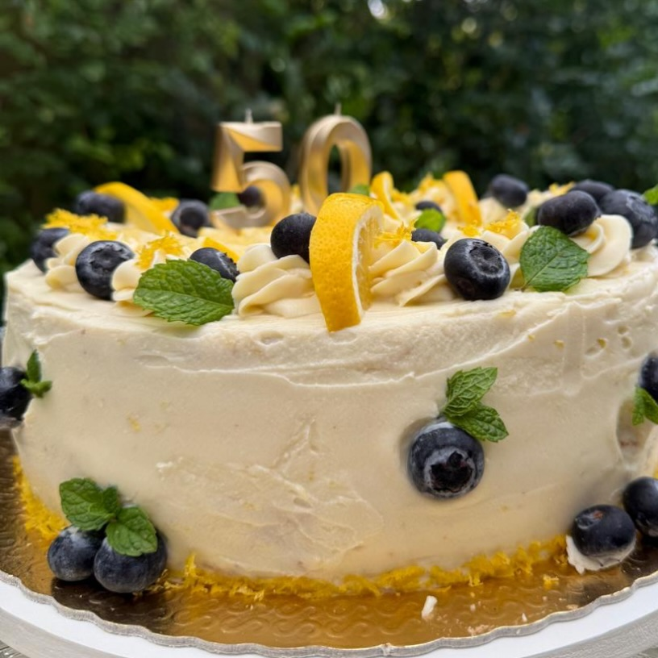

Bolo de pistache
Brigadeiro de pistache e cobertura de marshmallow. Um convite para escolher a primeira fatia.
Consultar encomenda ↗
Fazer uma encomenda
GIANDUIOTTO DELÍCIAS E CAFÉ
Na primeira fatia.
No café sem pressa.
Nos encontros que deixam saudade.

UM GOSTINHO DA NOSSA VITRINE
Bolos, torteletes e pequenos motivos para fazer uma pausa. Conheça algumas delícias que já passaram por aqui.
Brigadeiro de pistache e cobertura de marshmallow. Um convite para escolher a primeira fatia.
Consultar encomenda ↗
Brigadeiro e cerejas em uma pequena delícia. Para acompanhar o café ou adoçar o encontro.
Consultar a disponibilidade ↗
Chocolate branco, mirtilos e um toque de limão siciliano para celebrar os bons momentos.
Conversar sobre meu bolo ↗Essa é uma seleção das nossas delícias. Sabores, tamanhos, preços e disponibilidade são confirmados diretamente com a equipe.
O que tem na vitrine hoje? ↗PARA OS SEUS MOMENTOS ESPECIAIS
Aniversário, encontro em família ou um carinho em forma de bolo. Fale com a equipe para combinar sua encomenda.
Vamos planejar sua encomendaCompartilhe a data e o que você está imaginando para esse momento.
Converse sobre sabores, tamanhos e as opções disponíveis para a sua data.
A equipe confirma valores, antecedência e a melhor forma de receber sua encomenda.
A GIANDUIOTTO
Em Vinhedo, a Gianduiotto Delícias e Café reúne bolos, doces e café para os pequenos prazeres do dia. Em 2026, são 14 anos de história.
Peça um Cappuccino Gianduiotto, descubra os Piccolos — nossos bolinhos individuais — e escolha um doce para chamar de favorito.
Aqui tem felicidade certa. E sempre um bom motivo para voltar.
Acompanhe nosso dia a dia no Instagram ↗Rua Manoel Matheus, 1358
Vinhedo · São Paulo
Encomendas e informações
WhatsApp (19) 97148-6408 ↗
Em feriados, confirme o horário com a equipe.